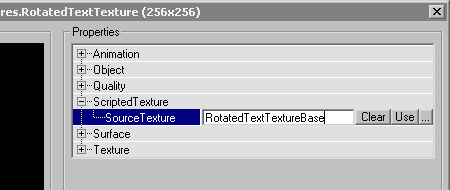

ScriptedTexture (UT)
A ScriptedTexture is a dynamic texture that can be drawn on in real-time with UnrealScript, used (for instance) for the scrolling scoreboard in DM-Morpheus and the ammo counters on various UT weapons.
See ClientScriptedTexture and the Screen component for applications of ScriptedTextures.
See ScriptedTexture for the UT2003 version of this class.
Note that scripted textures do not work on non-D3D renderers like the Mac or non-accelerated video. The way in which they do not work is ugly as well as annoying - you get a blown-out white blob.
Properties
- Actor (UT) NotifyActor
- The actor which is responsible for drawing the dynamic content on this ScriptedTexture. On each frame, this actor's RenderTexture event is called. ClientScriptedTextures point their assigned ScriptedTexture's NotifyActor to themselves on game start.
- Texture (UT) SourceTexture
- Background texture to which the texture is reset on each frame before the NotifyActor's RenderTexture event is called. The SourceTexture's palette is used for the ScriptedTexture by default, but you can modify the ScriptedTexture's Palette property to change that.
Methods
- DrawTile (float X, float Y, float XL, float YL, float U, float V, float UL, float VL, Texture (UT) Tex, bool bMasked)
- Draws a texture tile on the ScriptedTexture at the given X/Y position, stretched to XL/YL pixels, and taken from the area specified by U/V (horizontal/vertical texel offset) and UL/VL (width/height) from the given texture.
- DrawText (float X, float Y, string Text, Font Font)
- Draws text in the given font at the given position. Unlike DrawColoredText, this method takes anti-aliasing in fonts into account, but therefore keeps the coloring of the textures holding the font (usually shades of white).
- DrawColoredText (float X, float Y, string Text, Font Font, color FontColor)
- Draws text in the given color. All pixels in characters that aren't entirely transparent (have the background color) are drawn in the given solid FontColor. (Anti-aliased fonts drawn with DrawColoredText look pretty jagged that way.)
- ReplaceTexture (Texture (UT) Tex)
- Copies the given texture on the ScriptedTexture's canvas. The given texture and the ScriptedTexture must have exactly the same size. Only image data is copied, not the texture's palette; if both palettes don't match, you'll get a pretty psychedelic effect.
- TextSize (string Text, out float XL, out float YL, Font Font)
- Returns the size of the given text in the given font in the out parameters XY/YL.
Creation in Code
ArcaneSpeech: Judging from the ScriptedTexture definition, it should be possible to create a ScriptedTexture object at runtime, then set its properties:
function aFunction() { local ScriptedTexture aScriptedTexture; aScriptedTexture = new class'ScriptedTexture'; if(aScriptedTexture == None) { Warn("Unable to create new ScriptedTexture for "$Name); return; } aScriptedTexture.SourceTexture = aTexture; aScriptedTexture.NotifyActor = Self; MyTexture = aScriptedTexture; }
ArcaneSpeech: When I do this, I get no warning, but RenderTexture() is never called and the texture appears blank. Any ideas on why this doesn't work?
Mychaeel: I've tried to create ScriptedTextures at runtime, with results ranging between "doesn't work" and "crashes game," but never successfully. I frankly doubt it is possible in UnrealScript.
ArcaneSpeech: Okay, I believe that, I just wanted to be sure it wasn't my code at fault – I mean, that should work in theory, right?
Wormbo: I guess the texture needs to be added to some sort of native notification list to actually cause RenderTexture events.
Mychaeel: I suppose ScriptedTexture (or any other Texture subclass) simply cannot be successfully instantiated from UnrealScript; I actually don't even know whether "new" invokes any sort of nontrivial constructor for the created objects (like Spawn does).
Creation in UnrealEd
In order to create your own custom ScriptedTexture from a given base texture, perform the following steps:
See Texture Import and Export for an explanation how to import the base texture. (You can skip this step if the texture you want to use as the ScriptedTexture's base is already present in a texture package in UnrealEd.)
Then, click File → New in the texture browser to create a new ScriptedTexture that will be based on this texture. |
![[scriptedtexture-newtexture]](images/scriptedtexture-newtexture.gif) |
After clicking OK the new texture's property sheet will pop up. All that's left to do is assigning the base texture (here: RotatedTextTextureBase) to the newly created ScriptedTexture. (It is possible to base more than one ScriptedTexture on the same base texture.) When you're done with that, close the texture properties window. The ScriptedTexture will look like its base texture in the texture browser and textured UnrealEd viewports. |

|